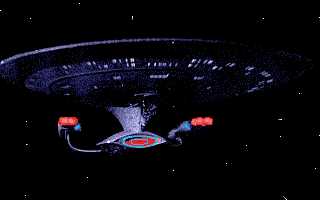

Patrick Stewart......................Captain Jean-Luc Picard Jonathan Frakes......................Commander William Riker LeVar Burton.........................Lt. Geordi La Forge Denise Crosby........................Lt. Tasha Yar (first season only) Michael Dorn.........................Lt. Worf Gates McFadden.......................Dr. Beverly Crusher (did not appear in second season) Marina Sirtis........................Counselor Deanna Troi Brent Spiner.........................Lt. Commander Data Wil Wheaton..........................Wesley Crusher (regular first - fourth seasons, occasional appearances thereafter) Diana Muldaur........................Dr. Katherine Pulaski (second season only) Whoopi Goldberg......................Guinan (occasional appearances second season on) Colm Meaney..........................Miles O'Brien Majel Barrett........................Computer Voice, Lwaxana Troi
Pilot episode for the series. While en route to investigate problems on Farpoint station, the Enterprise meets the mysterious super-powered Q. Q condemns humanity and challenges them to solve the mystery at Farpoint.
A sequel episode to "The Naked Time" episode of the old series. The Enterprise rendezvouses with the science vessel U.S.S. Tsiolkovsky and find the entire crew dead. Unknowingly, they bring back to the Enterprise the strange infection that caused the crew of the science vessel to go crazy. The crew of the Enterprise discover that the cure found by the first Enterprise for this disease does not work due to a mutation in the virus.
The Enterprise travels to Ligon II to obtain a rare vaccine needed to avert a plague on another planet. The Logonian leader kidnaps Tasha as part of the traditions of his planet. Eventually she is forced to fight a battle to the death with the wife of the leader in order to gain her freedom and the vaccine.
A Ferengi vessel steals an energy unit from a Federation base and the Enterprise pursues. Both ships are rendered immobile as they pass an unknown solar system. Believing each other responsible for the immobility, they discuss surrender. Meanwhile, an Enterprise probe discovers that a force-field on the nearby planet is actually responsible and a joint expedition of Ferengi and Federation personnel, beam down to explore. They encounter a mysterious being known as Portal who presents them a test.
An engineer and his alien assistant board the Enterprise to perform an experiment that would increase warp engine output. During the experiment, something goes wrong and the Enterprise ends up in a place where thoughts become real. The assistant from a race of "travelers" with the scientific capabilities far beyond ours who tour the universe seeking those with potential. The traveler confides to Picard that Wesley is one of those beings with potential and should be guided and helped to grow. It is as a result of these comments, plus the knowledge and help that Wesley provides in Engineering that prompts Picard to make Crusher an acting ensign.
While on a mission to transport emissaries of two warring races to Parliament for negotiations, the Enterprise encounters a strange cloud consisting entirely of energy. As they pass, a bolt of energy strikes Worf and passes from crewman to crewman, killing one crewman and eventually taking over Picard's mind.
The Enterprise travels to the idyllic world of Rubicam 3, home to a race of people known as the Edo, for shore leave. Wesley falls afoul of their justice system which demands that anyone who commits a crime be executed immediately. Picard must then choose between Wesley and obeying the Prime Directive. To complicate matters, a strange alien presence surrounds the world and is worshipped by the Edo as a God. It has unlimited power and does not want Picard interfering with the Edo's laws.
The Enterprise meets a Ferengi Vessel whose captain, Bok, blames Picard for the death of his son while Picard commanded the Stargazer. Bok returns the derelict Stargazer to the Federation as a gift but has secretly placed a mind altering device on board. Using this device, Bok attempts to get revenge on Picard by causing him to believe that he still commands the Stargazer and the Enterprise is the alien ship.
Again, the control of the Enterprise is seized by the mysterious alien known as Q. This time, Q transports the entire bridge crew except Picard to a desolate planet and forces them to play a deadly game. The game's true purpose is to test Riker to see if he is worthy of receiving the power of the "Q".
The Enterprise arrives at Haven, a paradise planet. There, Troi meets her fiancee of a pre-arranged marriage for the first time and is torn between her life in Starfleet and her devotion to her family and customs.
In a pastiche of Philip Marlowe's "The Long Goodbye" and other detective films of the 40's, Picard enters the holodeck and the fictional world of the detective, Dixon Hill. Picard becomes the investigator involved in his latest case. Meanwhile, an alien probe shakes the ship and damages the holodeck controls accidentally turning the fantasy world into a deadly trap. This episode won a Peabody award.
The Enterprise travels to the Omicron Theta star system, where Data was discovered years, ago in order to investigate the disappearance of a colony. In a hidden cave, they find another robot, Data's twin brother Lore, and revive him. They discover, almost too late, that Lore is a megalomaniac and out to destroy the Enterprise.
The Enterprise travels to a planet controlled entirely by women in order to search for survivors from a Federation ship which disappeared in that sector seven years earlier. The away team is thwarted in their efforts by the female-run government. Meanwhile, a highly contagious virus plagues the Enterprise.
The Enterprise docks at Starbase 74 for a refit. The maintenance crew, four Binars, program the antimatter containment to fail causing the crew to evacuate the ship in a panic. Meanwhile, Picard and Riker, in a Binar-enhanced program on the holodeck, are totally unaware of the situation. After the crew, except for Riker and Picard, leave the ship, the Binars hijack it to return to their home planet to save their computers from the effects of a supernova.
Admiral Jameson is transported by the Enterprise to Mordan IV to negotiate with terrorists who have captured the Federation ambassadors. For some reason, they will talk only with the admiral. Meanwhile, the Admiral has taken a strange drug which is causing him to age backwards.
The Enterprise discovers the legendary planet of Aldea and the advanced civilization that lives there. The inhabitants have extraordinary technology including the ability to cloak their entire planet, but lack the capacity to have children. When the crew of the Enterprise refuse to trade some of the children from the ship for technology, the Aldeans kidnap Wesley and six other children from the ship.
The Enterprise visits a terraforming station on Velara III where they encounter a new life form which, after being beamed up to the Enterprise for examination, attempts to take over the Enterprise.
The Enterprise travels to Relva 7 where Wesley takes his entrance exams to enter Starfleet Academy. Meanwhile, an old friend of Picard's, now an admiral, arrives with an aide from the Inspector General's office to investigate the ship and its crew on the pretext that something is wrong on the Enterprise.
In the Neutral Zone, the Enterprise finds a Talarian ship with three Klingons aboard. The Klingons claim to be have been passengers on the ship but turn out to be dissidents, opposed to the Federation-Klingon peace. They attempt to get Worf to help them when a Klingon cruiser enters the area and demands the return of the criminals.
The Enterprise arrives at Minos, a planet once inhabited by weapons manufacturers who have been destroyed by their own creations. Automated salesmen and weapons display systems still function and the away team is forced to fight for their lives against weapons that keep getting more sophisticated and intelligent as time passes. Meanwhile, in orbit around the planet, Geordi in command of the Enterprise is forced to fight another weapons system with the capability to cloak itself.
While investigating a sun with very strong magnetic-field fluctuations, the Enterpise intercepts a distress call and rescues a nearby freighter. Safely on board the Enterprise with their cargo, four of the inhabitants fight over ownership of the cargo - a very addictive narcotic.
A shuttle containing Troi and a pilot is returning from a conference when it crash-lands on Vagra II. When the Enterprise locates the shuttle interference prevents them from using their sensors or transporters to beam up the two occupants. The away team find an alien named Armus which appears like an oil slick but is able to assume humanoid shape at will. Armus blocks their path and prevents them from rescuing their comrades. During the encounter, Armus taunts the crew as they attempt to reach the shuttle.
The Enterprise encounters a time loop which leads them to a scientist performing lethal time warp experiments. To close a rift to another dimension accidentally opened by the experiments, the away team must shutdown the experiment by dropping a specific amount of antimatter into the rift at a specific time. The scientist's wife turns out to be one of Picard's old lovers whom Picard failed to meet at a rendezvous in Paris 22 years ago.
The Enterprise is diverted from a mission by a special transmission for Picard's eyes only. The message is from Keel, an old friend of Picard's who asks to meet him on a nearby mining planet. Picard beams down to find the captains of several ships waiting there. Keel and the other captains, after ascertaining Picard is who they think he is, tells him about a suspected conspiracy within Starfleet citing a strange pattern of orders from Command as evidence. They urge him to be careful. After leaving the planet, the Enterprise comes upon the debris of Keel's ship. Picard asks Data to review the last few months of orders issued by Starfleet. Data reports that there has been an unusual amount of changing of people within the command areas of Starfleet. Picard orders the ship back to Earth where they discover several admirals, including Picard's friend Quinn have been infected by parasitic creatures.
While Picard attends an emergency conference, the Enterprise discovers a 20th Century Earth-craft with three humans aboard frozen in suspended animation. The humans are revived and have trouble acclimating to the changes in the 370 years they have been asleep. Meanwhile, Picard returns from his meeting to inform the crew that several outposts at the edge of the Neutral Zone have been destroyed and Romulans are suspected. The Enterprise has been sent to investigate.
This episode introduced Dr. Kate Pulaski as the new Chief Medical Officer. En route to pick up samples of various viruses for study, The Enterprise is invaded by a strange, glowing light which searches around the ship until it finds Counsellor Troi and enters her body. Troi wakes up distressed and, after a medical examination discovers she is pregnant and the pregnancy is proceeding at an unusually rapid rate.
The Enterprise discovers a new phenomenon in the Morgana quadrant - a void that they can see but their sensors can't. It is inhabited by a strange being, Nagilum, who wishes to study the humans and is particularly curious about how humans die.
Geordi plays John Watson to Data's Holmes in a holodeck created mystery. However, since Data has memorized all of Doyle's stories, he quickly solves the puzzle. When Pulaski claims that human understanding of mysteries and solving them is beyond Data's ability, Geordi programs the computer to create an original story and invites Pulaski along to watch Data solve it. Unfortunately, the computer merely combines elements from different stories providing no more difficult challenge than the first attempt. Geordi instructs the computer to create an adversary capable of defeating Data and the computer obliges by creating a Professor Moriarty that is able to access the computer and even cause damage to the ship.
The Enterprise picks up a charming rogue, Okona, when his cargo ship's guidance system fails. Okona starts romancing and charming most people on the ship. He befriends Data and discusses humor with him and sex appeal. Data, convinced he doesn't understand humor, attempts to acquire a sense of humor. Meanwhile, an interplanetary vessel arrives and demands that Okona be turned over to them as a known criminal. While Picard considers his options, a second ship arrives, also demanding Okona.
A deaf mediator travels on the Enterprise to Solaris 5. He is deaf and dumb and communicates through his "Chorus" who receive his thoughts and speak for him. Each member of the three person Chorus speaks for a different part of his personality. The mediator becomes attracted to Troi who reciprocates. After beaming down to the planet to begin negotiations, one of the delegates who is apparently not interested in peace, attempts to kill he mediator but instead kills his Chorus. The mediator now must decide to return home or try and continue his mission.
The Enterprise travels to the home of a brilliant but terminally ill scientist. The scientist becomes fascinated by Data and begins to talk only to him and retreats into seclusion with him. He reveals that he has discovered a way to cheat death by transferring his mind into a computer. When the Enterprise beams the away team back, Data starts behaving in an extremely odd fashion.
A mysterious disease infects a research station, causing the inhabitants to age rapidly. When Dr. Pulaski is also infected, the crew of the Enterprise must find a cure within days.
As part of an exchange program, Riker becomes the new First Officer aboard the Pagh, a Klingon war vessel. Meanwhile, the Enterprise finds a strange substance on its hull which turns out to be a strange bacteria that feeds on metal. Earlier, the same substance was noticed on the hull of the Klingon ship so the Enterprise has to locate that ship and warn them. The Klingon commander has also found the damage and believes it to be Federation treachery and searches for the Enterprise.
A cybernetics expert wishes to dismantle Data for study so he can build more androids. When Picard declines, Maddox produces orders transferring Data to his command. Picard attempts to find a way to block the transfer but the only option is for Data to resign. However, it is discovered that, according to current laws, Data is considered property and cannot resign. In order to challenge this law, Picard is forced to defend Data in a hearing and Riker is forced to act as the prosecutor.
The Enterprise is assigned to transport the future ruler of Daled Four, with her guardian Anya. Wesley and Salia are immediately attracted to each other while Troi expresses concern that they may not be what they seem to be. Anya is a shape-shifter and overly paranoid about Salia's safety.
The Enterprise rushes to the Neutral Zone to aid the U.S.S. Yamato which has been plagued by systems failures. Shortly after the arrival of the Enterprise, the Yamato explodes and a Romulan ship uncloaks. After examining the logs of the Yamato, it becomes clear that the Romulans were not responsible for the destruction of the ship. The captain of the Yamato had apparently found the legendary planet of Iconia and his ship was infected by a computer virus transmitted by a probe from that planet. That virus was apparently the cause of the system failures and the final destruction. Unfortunately, since the Enterprise downloaded the logs from the Yamato's computers, it too has the same virus. Picard must travel to Iconia in the hopes of finding a cure to the virus.
One of the strangest episodes. The Enterprise finds debris from an old NASA ship orbiting a planet in an unmapped system. On the planet is apparently one single building which the away team discovers is modeled after the Hotel Royale from an old Earth novel.
The Enterprise picks up a shuttlecraft containing a version of Picard from the future. In the future timeline, the Enterprise apparently was destroyed with Picard the only survivor. The Enterprise now must discover what caused the destruction and how to prevent it.
Riker is offered command of the U.S.S. Aries, a small exploration ship. Sent to brief him on the new command is his estranged father.
The Enterprise is exploring geologic activity in several planetary systems when Data, working on a project to boost sensor output, picks up a faint signal which turns out to be from an alien girl without knowledge of extraterrestrial cultures. Talking with her, much less saving her from the seismic activity on her planet, would be a violation of the Prime Directive. Meanwhile, Wesley is given his first command, in charge of the team doing the planetary mineral surveys and discovers the difficulties of being in command.
The mysterious Q returns claiming that he has been asked to leave the Q-continuum and that he wishes to join the Enterprise crew. He tells Picard that they need him as a guide because humanity is unprepared for what awaits them. When Picard insists they are, Q hurls the Enterprise several thousand light-years away where they encounter the Borg, a race of cyborgs.
Picard joins Wesley on a trip to Starbase 515. Wesley is going there to take his Starfleet exams, while Picard is going for delicate heart surgury. Meanwhile, the Enterprise receives a distress call from the Pakleds, a race of beings who steal technology.
The Enterprise attempts to rescue two Earth colonies that left Earth in the mid-22nd century. The first colony, has rejected technology and returned back-to-nature. The ship carrying the second colony had apparently crash-landed and only five colonists survived. To keep their colony alive, they turned to cloning but are now in desperate need of new DNA.
The Enterprise is assigned to transport several delegates to a conference on Pacifica. One of the delegates is Troi's mother who is going through a phase that causes her sex drive to increase. Lwaxana stuns everyone by deciding she is going to marry Picard. Picard meanwhile, flees to the holodeck and the escapades of Dixon Hill.
An old love of Worf's comes aboard the Enterprise to brief the crew on their new mission. A Klingon ship, with a crew in suspended animation, was sent out while the Federation and Klingons were still at war. The mission of the Enterprise is to prevent the crew of that ship from awakening and rekindling an old war.
In order to prepare for the Borg, the Federation has been holding war games. Riker is placed in command of the U.S.S. Hathaway in simulated combat with the Enterprise. Riker is given his choice of crew and 48 hours to ready the ship before the battle begins. The battle is interrupted however, when a Ferengi ship appears demanding the Hathaway be turned over to them.
While exploring a new planet, Riker is infected by a mysterious disease which prevents neural activity. Pualski finds that the infection is spreading throught his body and when the infection reaches his brain, he will die.
The Enterprise is assisting an astrophysicist, Stubbs, in performing experiments in a binary star system when suddenly, the ship shakes, the shields drop and the Enterprise is sent hurling through space. After regaining control of the ship, the crew is perplexed by the sudden computer malfunctions encountered. Meanwhile, Wesley realizes that two tiny robots he accidentally let loose may be responsible for the mysterious problems the crew is facing.
The Enterprise receives a message from the Sheliak, a race the Federation had not heard from in over 100 years. The Sheliak insist that a world in the Tau Cygna Five system is theirs and demand the immediate removal of humans from that system. The Enterprise does not believe that humans are on that planet due to the fact that the planet has extremely high radiation levels but travels there anyway only to discover a thriving civilization that refuses to evacuate the planet. Data has to convince the people of the planet to leave or be destroyed by the Sheliak.
The Enterprise is sent to investigate an emergency distress call from the Delta Rana system. Upon arrival, the crew discover that all of the inhabitants have been killed except for one couple. An away team beams down to retrieve the survivors in case the aliens that destroyed the planet returned. The survivors refuse to leave the planet stating they can care for themselves. The away team returns to the Enterprise to discuss the situation and are attacked by an alien ship. Meanwhile, Troi is suffering due to some strange music she keeps hearing in her mind.
A new race, currently at the Bronze Age level are being watched by Federation scientists hidden away in a cavern. The Enterprise is sent to fix their reactor but, unfortunately, does not arrive in time to prevent the reactor from exploding and killing most of the scientists. As the Enterprise team begins to tend to the injured and replace the reactor, two of the natives discover the existence of the Federation. Startled, one of them falls and is injured. Dr. Crusher takes him to the Enterprise where he accidentally sees Picard and hears him order the search for a missing scientist continued. Picard also orders Dr. Crusher to erase the short-term memory of the native to preserve the Prime Directive. After he is recovered, Liko is returned to his people where he tells them of his journey and of `the Picard", a god from their old legends. The natives find the missing scientist and hold him captive in order to force "The Picard" to make an appearance. Riker and Troi are beamed down to recover the scientist, but Troi is captured while Riker makes his escape with him. Picard now must decide between Troi's life and maintaining the Prime Directive.
A sudden explosion kills Marla Aster on a mission to explore the home of a long-dead race. Worf, who commanded the away team, rages about the senseless nature of the women's death and plans to offer the Klingon bonding rite to her remaining son, Jeremy. Meanwhile, an energy field is discovered on the planet and Troi senses an alien presence rising upward from it toward the ship. Almost immediately, Jeremy sees his mother who has come, seemingly from the dead, to take him down to the planet.
After discovering a derelict ship in an asteroid belt, the Enterprise is trapped in an energy field that prevents them from leaving. Furthermore, they begin to lose energy reserves and discover that their shields will not keep out the radiation for long. Geordi races against time, with the assistance of an holographic version of one of the ship's designers, to discover a way to escape the deadly trap.
The Enterprise investiages a distress call on a Federation planet with a particularly harsh surface and winds. The away team finds the remains of a Romulan ship and one Romulan, barely alive. The away team beams aboard the Enterprise with the Romulan, accidentally stranding Geordi on the planet where he, moments before beam-out time, stumbled into a pit. The crew of the Enterprise struggles to keep the Romulan alive and to locate Geordi on the surface. Meanwhile, on the surface, as Geordi moves closer to the beacon the Enterprise left to guide him, he is taken prisoner by a second Romulan, Bokra. Geordi attempts to convince Bokra that they must work together to stay alive and be rescued while a Romulan Warbird closes in on the Enterprise determined to retrieve their lost comrades from the grip of the Federation.
A race of beings known as the Barzan have discovered the only known stable wormhole and are willing to sell it to the highest bidder. The Enterprise carries several delegates to the site of the wormhole including a hired representative of the Chrysalian people who takes an interest in Troi. Geordi and Data enter the wormhole and discover that it is not truly stable. Meanwhile, Troi discovers that the representative of the Chrysalians, Ral, is part Betazoid and empathic and has been using his ability to gain unfair advantage in the negotiations.
A science outpost is attacked by the Gatherers, a band of Acamarian renegades. Picard talks with Marook, the Sovereign of Acamar Three, who wants to hunt the Gatherers down and destroy them. Picard convinces her to attempt to negotiate first and she and her cook board the Enterprise to travel to a Gatherer outpost to open talks. While there, the leader of the group is killed by a mysterious assassin.
A Romulan scoutship, with a Romulan Warbird in pursuit, hails the Enterprise and requests asylum. After the Enterprise easily chases off the Warbird, they beam aboard the occupant of the scoutship, Setal, who has information about a new Romulan offensive. The Enterprise crew, skeptical about the defector's claims and motives and attempting to get at the truth, travels to Nelvana 3 where there is supposed to be a Romulan base at which a large Romulan fleet will gather to launch an offensive against the Federation.
The Enterprise visist Angosia 3, a planet which has applied for membership in the Federation. While there, a prisoner escapes jail and Prime Minister Narok asks for assistance in recapturing him. The Enterprise succeeds in capturing him, only to find that he is extremely dangerous and not all that Narok has claimed him to be.
The Enterprise is delivering medical supplies to Rutia Four, a non-Fedration planet in the midst of a civil war, when Dr. Crusher is captured by the leader of a terrorist group who appears out of thin air.
While on a mission to rescue a planet from its own moon which has fallen out of orbit, the Enterprise is visited once more by the mysterious Q. This time, Q, totally naked, claims he has been kicked out of the Q-Continuum and asks for sanctuary. Q is now mortal and wants guidance from the crew on how to be human, in exchange for his experience and knowledge. While on the Enterprise, Q is attacked by the Calamarians, a race that wants revenge on Q for acts done to them.
Dr. Apgar, a scientist working on Krueger waves, is killed when the station he was working on suddenly explodes moments after Riker talks with him privately. Chief Investigator Krag, arrives on board the Enterprise and demands Riker be turned over to him to face trial for murder. Picard, unwilling to release Riker without a hearing convinces the Chief Investigator to allow the circumstances of the incident be recreated on the holodeck with the help of statements from all parties concerned. Meanwhile, bursts of unknown radiation, able to cause damage to metal, plague the Enterprise.
The Enterprise happens upon a time-rift in space and the world changes around them as the Enterprise-C comes out of the rift. In this new reality, the Enterprise is at war with the Klingons, a war that they cannot win. Also, Tasha Yar is still alive and serving as Tactical Officer aboard the Enterprise-D. The Enterprise-C is critically damaged and was apparently involved in a fight with Romulans while in defense of a Klingon base. The crews eventually realize that, had the Enterprise-C been successful, the current war with the Klingons might never have happened. Clearly, the Enterprise-C must return even though it is likely to never survive the battle. When the Captain of the Enterprise-C is killed during a Klingon attack, Lt. Castillo asks to take the ship back through the warp himself. Meanwhile, Guinan, whose peculiar senses have told her that things are not as they should be, tells Tasha that in the true timeline, Tasha died an empty death. This convinces Tasha that she should return with the Enterprise-C as their tactical officer so that her death can have some meaning, and so she can be with Castillo with whom she has fallen in love.
Data, after returning from a cybernetics conference, builds a robot child, Lal. While the crew attempts to deal with Data's fatherhood, Data attempts to teach Lal about humanity. Starfleet Admiral Haftel, after hearing about the experiment, attempts to convince Picard that the new robot should be moved to the Daystrom Institute where she can be properly studied and taught.
As part of the exchange program that once made Riker First Officer on a Klingon ship, Commander Kurn joins the Enterprise. Kurn is Worf's younger brother and has come to tell Worf that their father has been accused of betraying the Klingons by revealing the location of the Khitomer outpost to the Romulans. Worf, by Klingon tradition must travel to the homeworld of the Klingon empire to challenge the accusation and, if he fails, will die as a traitor.
Picard is taken from the Enterprise while he sleeps by a strange probe and wakens in a prison with two other captives. Neither can explain how they came to be there nor have they seen their captors. Soon they are joined by a fourth captive - a carnivorous alien who will eat the others if they do not escape and food is not provided. In the midst of mutual dislike and lack of trust, the four captives must find a way to escape or contact their captors. Meanwhile, Picard has been replaced on the Enterprise by a nearly exact duplicate.
Picard is talked into taking a vacation on Risa, a pleasure planet. When he arrives, he bumps into a women who, pursued by a Ferengi, grabs him and kisses him as if they were old friends. They later meet again and, after introductions, Picard discovers that she is out to find the location of a device brought from the future. The Ferengi also wants the device or the disk that the woman, Vash, has that reveals the location of the device. Meanwhile, two security agents from the future confront Picard and tell him that he is destined to find the device and they have come back in time to retrieve it from him. Vash and Picard team up to find he device and thwart the Ferengi but, Picard hopes to turn it over to the security agents.
The Hood unexpectedly joins the Enterprise and delivers their new orders and a passenger, Tam Elbrun. Tam is a Betazoid telepath and specializes in first-contacts but, he is also not well liked because he lacks tact. Tam explains that a recently discovered object in orbit around a dying star is suspected of being a living spaceship, dubbed "Tin Man" and Tam's mission is to contact it. However, the Romulans claim that space and are also sending ships to contact the newly discovered alien.
A young engineer, Lt. Barclay, is obsessed with fantasy worlds because has problems coping with reality and the crew of the Enterprise have problems coping with him. Meanwhile, strange malfunctions start occurring on the Enterprise.
Data is using the shuttles to transfer a large cargo of a special element that cannot be transported when, on the last trip, his shuttle mysteriously explodes. The Enterprise is forced to leave the area to deliver their cargo and are not able to investigate the accident. Meanwhile, Data has not been destroyed but captured by Kavis who is a collector of rare and unique things and Data would be a fine addition to his collection.
Ambassador Sarek comes aboard the Enterprise with his staff and new, human wife, to complete treaty negotiations with the Legarans who insisted on him mediating. Soon after his arrival, the crew of the Enterprise begin to suffer from bouts of violence and other emotional outbursts. Eventually, the crew discovers that Sarek is suffering from a rare Vulcan disease that erodes all emotional control in Vulcans. Since Vulcans are highly telepathic, he has been broadcasting emotions to the crew. But, because of his illness, the important treaty with the Legarans is in jeopardy.
The Enterprise travels to Betazed for a reception following a trade agreement. While there Deanna visits her mother and gets into an argument about settling down and raising a family. Meanwhile, Daimon Tog, of the Ferengi, takes a liking to Lwaxana both sexually and because her telepathy will help him in making deals. Lwaxana is repulsed by his offers and orders him away. Tog, not to be dismissed so easily, kidnaps Lwaxana (along with Riker and Deanna) and takes them aboard his ship where he hopes to convince Lwaxana to marry him.
The Enterprise rescues an injured human from a damaged escape pod in an unexplored system. Dr. Crusher finds that his recuperative powers are incredible and that he will revive, given time. When he does, he has no memories of who he is, where he is from, or how his ship was wrecked. Still suffering from bouts of severe pain, Dr. Crusher finds that he is emitting inixplicable energy bursts which are somehow linked to his cells. Furthermore, he begins to exhibit strange abilities like being able to heal injuries with the energy bursts.
One of the outermost colonies of the Federation has been recently lost and the Enterprise is sent to investigate. They discover that the entire town has been removed and only a crater remains. Fearing that this might be the first step in the invasion by the Borg, the Enterprise takes on board Lt. Commander Shelby who has become the Federation's tactical expert on the Borg. She makes it plain to many that she is highly interested in replacing Riker, who has, again, been offered his own command. Admiral Hanson attempts to convince Picard that Riker should take the new command for the good of his career. After investigating the evidence, they come to the conclusion that it was the Borg that destroyed the colony. Now, the Federation has to develop weapons and defenses against the cyborg aliens. While Shelby and the Enterprise crew struggle with the problem, they learn that a Federation ship sent out a distress call describing an encounter with the Borg. The Enterprise, being the nearest ship, travels to the scene and meet the Borg. The Borg hail Picard specifically and demand that Picard beam aboard their ship immediately, threatening the destruction of the Enterprise if he refuses. Picard, naturally, refuses. After a brief, but losing battle with the Borg, the Enterprise, to escape, enters a nebula with the Borg ship in pursuit. Once in the nebula, they drop to impulse and begin repairs to the ship. They also analyze the recent battle and discover that the Borg are vulnerable to phasers in one particular frequency band. The Borg ship starts mining the nebula and forces the Enterprise out. Once out of the nebula, several Borg beam over to the Enterprise and grab Picard. The Borg then head for Earth. The Enterprise crew must devise a plan to cripple the Borg ship and retrieve Picard. This episode is the finale of the third season and is a cliffhanger episode to be continued in the fourth season.
This episode is the continuation of the show that ended the third season. The Borg are heading for Earth with Captain Picard on board and the Federation is arming for a final battle. The Enterprise, now commanded by Riker pursues the Borg toward Earth.
In this episode, several of the crew are faced with family related matters and relatives. Picard, having been rescued from the Borg returns to his home town to visit with his brother and his family. Worf is visited on the Enterprise by his adoptive parents - the Roszhenkos. And Wesley must decide whether to view a hologram tape made by his late father.
A young child is hurt during play with his brother as the result of a joke. After he runs off, he eats a poisonous fruit and the Enterprise must get him to a Starbase for treatment. Meanwhile, Data seemingly malfunctions and takes over the Enterprise, changing its heading to an unknown location. Once there Data beams down to the surface to be reunited with his creator, Dr. Nonnian Soong and with his brother, Lore. Brent Spiner reprises his role as Lore, and plays Noonan Soong.
The Enterprise comes to the rescue of a Talarian ship only to find a human child aboard. The child, Jono, turns out to be the last remaining survivor from a colony presumed destroyed by the Talarians. Picard must decide whether to return the boy to his Talarian father who raised him and is suspected of abusing him or to his natural grandmother, an admiral in Starfleet. Meanwhile, Jono attempts to learn human habits and customs after his many years with the Talarians.
Wesley and Geordi are involved with an experiment in engineering as the Enterprise takes on new crew members at Starbase 133. Dr. Crusher welcomes on board an old friend, Dr. Quaice who seemingly disappears overnight without a trace. In fact, no one, including O'Brien who beamed him up, remembers seeing him and there is no trace of his existence anywhere in Starfleet. As the crew begins to vanish, also without a trace, Dr. Crusher struggles to convince Picard that something is wrong and comes to doubt her own sanity.
The crew of a cargo ship lands on Turkana Four and sends a distress call received by the Enterprise who rush to their aid. On Turkana Four, the crew of the Enterprise has their mission hampered by two warring factions. Lashara Yar is Tasha Yar's sister and attempts to help the Enterprise.
The leader of the Klingons, K'Mpec, is dying and asks for Picards help in finding which of his two successors - Duras and Gowron, poisoned him. Meanwhile, Worf has a reunion with his former mate, Ambassador K'Ehleyr, and their son.
During a routine mapping mission, the Enterprise discovers unusual readings on Alpha Onias 3. Riker commands an away team to the planet but, the team succumbs to gas. Riker wakes in sickbay to discover that it is 16 years later and he is now the captain of the Enterprise in the middle of tricky negotiations with the Romulans. He also apparently has a son named Jean-Luc. Riker struggles to regain his memory and continue his mission but, something doesn't seem right.
Wesley's final mission on board the Enterprise before leaving to attend Starfleet Acadamy is to accompany Picard to negotiations with miners on Pentarus 5. On the way to the planet, the shuttle craft piloted by one of the miners is forced to make a crash landing on the moon of Pentares 3. Meanwhile, Riker, in command of the Enterprise, leads the ship in a rescue mission to save a planet from the harmful effects of radiation from an errant abandoned ship.
The Enterprise encounters a mysterious life-form that entraps the Enterprise in its gravitational field. None of the Enterprise's engines or weapons can be used to free the Enterprise before the ship is dragged by the entity into a cosmic string. Meanwhile, Troi discovers that she is empathically blind and resigns as ship's counselor because she feels she is unable to perform her duties.
Data describes a day in his life aboard the Enterprise for Admiral Maddox of Starfleet. On this particular day, Data describes his role in the wedding of Kako to O'Brien and the duties involved in escorting the Vulcan Ambassador T'Pel. T'Pel is on a diplomatic mission to open ties with the Romulans and orders Picard to enter the Neutral Zone to rendezvous with a Romulan warbird commanded by Admiral Mendak.
An uneasy peace between the Federation and the Cardassians may come to an end due to the actions of a renegade Federation captain who believes the Cardissians are preparing for a war. Captain Picard must intercept the Phoenix, commanded by Maxwell and put an end to his attacks on Cardassian ships. Meanwhile, Chief O'Brien must deal with his feelings for the Cardassians and his loyalties to Maxwell, Picard and the Federation.
A mysterious woman arrives on Ventax claiming to be the woman named Ardra who once promised the Ventaxians 1000 years of peace and prosperity in exchange for ownership of the planet and the people. The Ventaxians appeal to the Enterprise for help and it becomes Captain Picard's responsibility to prove that Ardra is a fraud, the contract made 1000 years ago is invalid and that her diabolical powers are nothing more than a trick.
While exploring an unknown region of space, the crew of the Enterprise, except Data is rendered unconscious. When they awake, Data tells them they were out for only a few moments but, several things just don't seem right. Evidence begins to mount that they were out for hours and that Data is, inexplicably, lying about what happened while they were unconscious.
Riker is captured by a planet on that is being investigated by the Federation prior to being officially contacted. The civilization is just on the verge of space travel but still believe themselves to be the only beings in the universe. Thus, the presence of Riker, an alien, comes as quite a shock to the leaders of the planet. In order to save Riker, Picard must violate the Prime Directive and make his presence known to the people of the planet ahead of schedule.
The Enterprise is visited by Dr. Leah Brahms who has been sent by Starfleet to review the changes made to her engine designs. Geordi, having fallen in love with the hologram-created version of the doctor has difficulty in learning to deal with the real thing. Meanwhile, the Enterprise comes upon an unusual alien being that lives in space. The alien being, threatened by the presence of the ship attacks and Captain Picard defends the ship with minimal phaser power. Unfortunately, the even minimal power is too much and the creature is killed instantly. As Picard and the crew ponder their actions, they discover that the dead alien was pregnant and, with some assistance from the Enterprise, a baby alien is born. But, the baby believes the ship to be its mother and the Enterprise has to discover a way to wean the baby.
The Enterprise is sent to rescue another Federation vessel that lost contact with Starfleet. The crew finds the ship drifting in space and the crew all dead under violent circumstances. As the Enterprise investigates, they find themselves fighting the same fate that destroyed the other ship.
Five years ago, before joining the Enterprise, Geordi was on an away team investigating a mysteriously abandoned outpost. All of the other members of that team except for Geordi and Susanna, have begun to disappear and the Enterprise is sent to investigate.
Lt. Barclay who in HOLLOW PURSUITS was seen to be an introspective, shy crewman with difficulties in dealing with reality. A brief encounter with an alien device turns Barclay into a near-superbeing with confidence in his own superiority and a low regard for his fellow crewman. In the holodeck, Barclay builds a device which enables him to interface with the computer to take control of the Enterprise and hijacking it to an unknown and uncharted part of space.
Picard is scheduled to give a lecture to a group of distinguished archaelogists, one of whom turns out to be his old flame, Vash. Meanwhile, Q turns up wanting to repay a supposed debt to Picard and discovers Picard's relationship with Vash. Q, to prove his point that Picard has a weakness for Vash, transports Picard and the Enterprise crew to Sherwood Forest as Robin Hood and his Merry Men who now have to rescue Vash from the Sheriff of Nottingham -- Q.
A mysterious explosion and a Klingon exchange officer caught sending Federation secrets to the Romulans lead to an investigation headed by Admiral Satie. The Admiral, well known for resolving difficult disputes and brilliantly leading investigations arrives on the Enterprise with her entourage and proceeds to investigate the alleged treason. In the course of her investigations she turns up the fact that a crewman, Simon Tarsis, lied on his Acadamey application form. He originally claimed he was a Human/Vulcan hybrid but is actually a Human/Romulan mix. Satie attempts to prove that Tarsis is the person mainly responsible for leaking secrets to the Romulans on a regular basis. Picard objects to her methods and deductions, she accuses Picard of being involved in the conspiracy and threatens to ruin his career in Starfleet.
Lwaxana, while aboard the Enterprise being transported home, falls for a scientist who is also on board the Enterprise in an attempt to avert the destruction of his planet caused by the destruction of the sun. Succeed or fail, his cultural heritage demands that, at the age of 60, which is fast approaching, he must return to his planet to commit suicide.
Dr. Crusher falls in love with an alien ambassador who is much more than he seems. His body is merely a host which lives in a symbiotic relationship with a parasite-like creature - the actual being that is Odan.
En route to a conference on Risa, Commander La Forge is captured by a Romulan ship and brainwashed to perform some service for the Romulans. Meanwhile, the Enterprise is on its way to Krios with Ambassador Kell to investigate claims made by the Klingon governor that the Federation has been supplying weapons to rebels on the planet. The Enterprise determines that the weapons being supplied to the rebels, while appearing to be Federation issue are, in fact, manufactured by the Romulans.
While at Krios, La Forge returns to the Enterprise completely unaware that he has been with the Romulans and believing to have spent the time at Risa as planned. He assists Picard in investigating the source of the weapons supplied to the rebels and assists Data in investigating the mysterious E-band signals that the Enterprise has detected. La Forge, under the influence of the Romulans, beams a supply of weapons to the rebels that is intercepted by the governor, causing Vagh to accuse Picard of complicity in the rebellion. When Governor Vagh boards the Enterprise to watch the investigation into the incident, he is nearly assassinated by La Forge, again completely under the influence of the Romulan's conditioning.
During the scenes on the Romulan cruiser when La Forge is being conditioned, a Romulan commander appears in the background hidden in shadows. There has been a lot of speculation as to the identity of the Commander however, the voice of the actress sounds a great deal like Denise Crosby who had left the show.
A crewman who recently broke up with her boyfriend starts making passes at Data and he tries to understand about love, dating and relationships. Even advice from his fellow shipmates in unhelpful in understanding the complexity his new-found relationship with DeSaura. Meanwhile, the Enterprise attempts to cope with mysterious "dark matter" which causes portions of the ship to desolidify at random.
This episodes is one of the more subtly humorous of this season's stories. Data's attempts at understanding love reminds us all of how awkward our own first attempts were and how complex and confusing the situation is. Data, as an android without the capacity to exhibit emotion is hilariously stiff and mechanical in dealing with the situation.
Continuing the events portrayed in REUNION, the Enterprise makes its way to the Klingon homeworld to see Gowron installed as the new emperor. Picard, as the chosen arbiter of succession must continue to fulfill his duty to see that Gowron becomes the emperor and that ties with the Federation continue. Meanwhile, Worf speaks to Gowron requesting that Worf's family honor be restored since it was Duras' family who betrayed the Kitomer outpost to the Klingons. Gowron refuses because of the influence that Duras' family still has with the council.
Picard beams down to the planet to perform his final act as arbiter. However, before he can properly install Gowron as the new emperor, Duras' sisters Lursa and B'Etor produce Toral, a bastard child of Gowron, who claims the right to succession. The ceremony is halted until Picard may decide if the child has a legitimate claim.
Worf, seeing the growing problems within the Klingon empire and the possibility of a civil war if Gowron becomes emperor, talks with his brother Kurn who is allied against Gowron. Worf convinces Kurn to lend his support to Gowron's forces so that the support may be used as a bargaining edge to regain the family honor.
Picard decides that Toral is not eligible to become emperor and bestows that title on Gowron. This causes the council to split with some following Gowron and some following Toral who is not only backed by the council and those loyal to the family of Duras but by Romulans led by a mysterious commander.
The Klingon empire is now at war. Worf, his family honor restored, resigns his commission as a Starfleet Officer to aide Gowron and learn what it means to be a Klingon. Meanwhile, the Romulans and the family of Duras make plans that will drag the Federation into the war and to lure Picard to his death.
This cliffhanger episode is the finale of the fourth season and will be concluded in the first episode of the new season. The actor portraying the mysterious Romulan commander is never given any credit in this episode or in THE MIND'S EYE where she first appeared however, it is clearly Denise Crosby. Hopefully, in the conclusion next season, we will discover the true identity of the commander, what her motives are and what caused her hatred for Picard.
The premiere of the fifth season was the second part of the previous season's cliffhanger episode. The war between Duras' family and Gowron's heats up and Duras appears to be winning. They have had the help of the Romulans commanded by Sela. The Federation wishes to stay out of the fight since it is an internal civil war but Picard convinces the Fleet Admiral that the Romulans may be involved and therefore the Federation should be as well. Picard sets up a blockade to prevent Romulan ships from sending supplies to Duras' forces and eventually, Duras' forces are defeated by Gowrons.
Sela, in one of the strangest (but predictable) twists on the show, claims to be Tasha Yar's daughter. Since Tasha died childless in "Skin of Evil", it seems impossible for her to have a grown up daughter much less one in a position of command in the Romulan Empire. For the answer, one needs to look at the events in "Yesterday's Enterprise". In that episode, the Enterprise D encountered Enterprise C in an alternate history where Tasha was still alive on the D. At the end of the episode, she returns to the past on the Enterprise C. When the Enterprise D returns to its correct history line, all memories of the encounter vanish and Tasha's existence on the C was forgotten. However, Tasha was captured by the Romulans when she returned to the past on the Enterprise C and eventually married a Romulan General and had a child by him. Tasha was eventually executed for trying to escape the Empire and Sela, Tasha's daughter, now has a hatred for Picard since he sent Tasha back on the Enterprise C. If the writers of the show develop this further, things could get very interesting - I hope they do.
The Enterprise encounters the Tamarians, a race with whom they have never been able to communicate. The Enterprise's mission is to open negotiations with the Tamarians - a mission that seems doomed to failure when the Tamarians kidnap Picard and strand him on a planet with their own captain to face a nameless beast.
A terrorist attack by the Bajorans on a Federation outpost prompts Admiral Kennelly to send the Enterprise to aid the Cardassians from stopping the terrorist attacks. The Bajorans lost their homeworld to the Cardassians and the terrorist attacks, led by Orta, until now had been confined to Cardassian locales. Solarian 4, a Federation outpost in a nearby star system was attacked by a ship claiming to be a Bajoran ship shortly after the Federation and the Cardassians signed a treaty. Admiral Kennely asks Picard to locate the terrorist's base and to bring their leader to the Cardassian system so that peace between the two people's may be arranged.
Admiral Kennely orders Picard to take onboard ship an ensign with a less than honorable past. Ensign Ro had been involved in an incident where she was responsible for the death of a landing party, courtmartialed and imprisoned in the stockade. Admiral Kennelly had her released because she is Bajoran and might be of help on the mission. But Ensign Ro has her own orders and may be part of a Federation conspiracy.
The crystalline entity which destroyed the colonists at Omicron Theta III attacks the new colony at Milona IV. Riker and Data help the colonists survive the attack by leading them into caves with a chemistry that the entity apparently can't penetrate. This is the first time that there have been survivors of an attack and Dr. Marr is dispatched to the area to study the planet and interview the survivors. Dr. Marr has made it her life's work to study the entity ever since her son was killed by the entity on Omicron Theta III.
The Enterprise, with Dr. Marr on board pursues the crytalline entity in the hopes of being able to communicate with it and find a way to prevent further destruction. Dr. Marr seems obsessed with not only destroying the entity but also with Data, who apparently has the memories and journal entries of her son in his memory banks.
The Enterprise encounters a cosmic filament which disrupts all major systems on the ship. Most of the senior officers are trapped in different places on the ship leaving Troi in command on the bridge. Picard is trapped in a turbolift with three children - winners of a science program. Riker, Data, Worf and Keiko are trapped in ten-forward and Geordi and Dr. Crusher are trapped in a cargo hold.
As the crew begin to recover, they realize that they are trapped in different areas of the ship and without any communication with other crew members. Each trapped group has its own major crises to overcome: Geordi and Dr. Crusher discover a plasma fire in the hold which is giving off radiation and the cargo in that hold explodes if it receives too much radiation; Picard and the children need to leave the turbolift before it begins to fall; Data and Riker try to get to the engineering section; Keiko goes into labor in ten-forward and Worf has to act as a mid-wife with no practical experience; the bridge crew consisting of Chief O'Brien, Ensign Ro, Ensign Mandel and Troi attempt to re-establish power, computer operation and a critical anti-matter containment field in the engines that can cause the ship to explode if not stabilized.
Riker brings a highly addictive game back from vacation and everyone on board the Enterprise becomes hooked by it, except for Data who suffers from a mysterious malfunction. The game apparently stimulates the pleasure centers of the brain while also attacking the reasoning centers. Only Wesley, on leave from the Academy, and his new friend, Robin Lefler remain unaddicted and it is up to them to save the crew.
Admiral Shanti advises Captain Picard that a Vulcan ambassador has gone to Romulus on an unauthorized mission. Picard sees a video picture of the Vulcan, Spock, and his Romulan contact. Picard travels to Vulcan to visit Sarek to find out why Spock went to Romulan and what he hopes to accomplish there. Despite Sarek's illness, Picard is able to see him and discovers that Spock has been in touch with a Romulan senator, Pardek. Sarek asks Picard to convey his love to Spock.
Meanwhile, Geordi and Riker inspect several metal fragments recovered from a Ferengi ship. The fragments are remains of a Vulcan Deflector system and the Federation wants to find out how the Ferengi got hold of them. The Vulcans claim to know nothing about the materials and Riker and Geordi conclude that the equipment was stolen.
When Picard returns to the Enterprise, he summons the help of the Klingons to get a cloaked ship for use to travel undetected to Romulus. After several days of unsuccessfully reaching Gowron, Picard finally gets through and convinces Gowron to provide a vessel. Meanwhile, intelligence reports confirm Spock's meeting with Pardek whom Data identifies as an advocate for peace and reunification of the Vulcans and Romulans.
While Riker and Geordi work together to discover how the Vulcan deflector unit ended up in the hands of the Ferengi, Data and Picard disguise themselves as Romulans and travel to Romulus on the Klingon ship. Once they arrive, they transport down and stop at a cafe near Pardek's office. When they spot Pardek and attempt to approach him, they are captured by Romulan guards. Later, however, they discover that Pardek had them arrested for their own protection. As Picard briefs the senator on their meeting, Spock suddenly appears before him.
This episode is the first episode of a two-part story which links the events in the series to the events in Star Trek VI: The Undiscovered Country which opened at theaters about three weeks after this two-part episode first aired. Spock, Pardek and Sarek were key figures in the Khitomer Conference which is one of the events depicted in the movie.
This episode is the second part of the story which began in Unification I.
Picard and Spock talk and Spock is initially uncooperative with Picard but soon accepts that Picard is representing the Federation. Picard informs Spock that his father, Sarek, has died and conveys his love to Spock. This helps Spock accept Picard as an ally and tells him that his mission to Romulus involves a plan to reunify its people with the Vulcans. Picard naturally does not trust the Romulans and Spock does not seem to fully trust either the Romulans or Picard. Picard sends Data back to the Klingon ship to attempt and access the Romulans' computer network.
Meanwhile on the Enterprise, Riker continues to investigate the theft of the deflector unit. He contacts Amarie, the ex-wife of a smuggler who was killed when the Enterprise destroyed an unmarked enemy ship that tried to interfere with the investigation.
Back on Romulus, Senator Pardek brings Picard and Spock to meet with Neral, the Romulan Proconsul who claims to support reunification. However, unknown to Spock and Picard, Neral is in league with Selas who appears in Neral's office after the Federation officers leave. Picard is very skeptical that Neral offered his support so readily without the support of the Romulan traditionalists among the council. Spock too is skeptical but is convinced that logic dictates that it is in the Federation's best interest to proceed whether the Romulans have an ulterior motive or not.
Amarie meanwhile puts Riker in touch with a Ferengi trader who reveals that the Romulans are involved in the theft of Vulcan ships. Riker contacts Picard and informs him of what he has learned. The two agree to rendezvous and Riker heads towards Romulan territory. Data, with Spock's help accesses the Romulan computer network and discovers that Neral and Pardek are out to double-cross them. Picard and Data transport back to Romulus to inform Spock and all are taken prisoner by Sela.
Sela informs them that they plan to use the stolen ships to conquer Vulcan. She plans to force Spock to deliver a speech announcing the approaching ships as a peace envoy but, in fact, they will be manned by soldiers with orders to seize control of the Vulcan government. When Spock refuses to cooperate, Sela shows them a holographic image of Spock, Picard and Data which she plans to use instead to complete her plan. When Sela leaves the room, Data and Spock set to work on the computer system to try and find an escape route. They manage to send an emergency signal to the Enterprise, which already suspects some sort of trick since they have been unable to reach Picard. Picard tells them of Sela's plan and the Enterprise destroys the ships.
Sela returns to her office planning to kill Spock and Picard but instead is tricked by holographic images giving the Federation officers the opportunity to subdue her and escape. Picard and Data return to the Enterprise while Spock decides to remain on Romulus in the hope of truly establishing peace with the Romulans.
The Enterprise is sent to Penthara IV which is undergoing an environmental crisis. On the way, the Enterprise encounters a disturbance in time and spot a ship which materialized in the area of the disturbance. On board the ship is Rasmussen who claims to be a scientist from the future who has returned to this exact day and time to watch Picard and the Enterprise perform their current mission.
The Enterprise heads to Bilana Three to help with historic tests of a new propulsion method, a Soliton Wave, which would impart warp drive to a ship without the bulky warp drive engines. While in the sector, Worf's mother visits the ship with Worf's son, Alexander who has been having difficulties living on Earth.
Alexander stays on the Enterprise and enrolls in school but he appears to be a liar, a thief and a bully. Worf must learn to build a relationship with Alexander and learn how to be a father.
Meanwhile, the experimental ship and Soliton Wave perform beautifully at first but, something goes wrong - a power fluctuation causes the wave to go out of control, destroying the test ship and damaging the Enterprise's engines, shields and sensors. The wave, at an unexpected energy level, heads toward a populated colony at warp speed and, if it hits the colony will completely destroy it. The Enterprise must find a way to stop the wave before it is too late.
The Federation loses communication with a science vessel sent to explore a strange star cluster and the Enterprise is sent to investigate. When they get there, they find the ship has been destroyed and the only survivor is a young boy who tells them that the ship was destroyed by an unknown enemy.
The boy suffers from the trauma of losing his parents and latches on to Data as his friend and hero. The boy begins emulating Data as a way of coping with the tragedy. Meanwhile, the Enterprise crew tries to discover the identity of the unknown assailants that destroyed the research ship.
A group of aliens who possess the ability to read minds are being transported by the Enterprise. They become the prime suspects when several crew members fall into an unexplained coma.
In this episode, the Enterprise encounters a group of colonists who have constructed a genetically engineered society. Unfortunately, a large stellar mass is about to pass through that region of space and the gravitational forces would destroy the colony. The Enterprise must help the colony to find a way to destroy the mass without destroying the carefully controlled society that has been built.
This episode is mosty a retread of "For the World is Hollow, and I've Touched the Sky" from the old series, complete with the isolated society, the Enterprise crewmember that falls in love with the local, and the major disaster that's about to destroy the colony unless the Enterprise can stop it.
A mysterious force causes the crew of the Enterprise to lose their memories of who they are, where they are and what their mission is. They soon come to believe that they have been ordered to penetrate into the heart of the Lysian system and to destroy them. As they struggle to regain their lost memories, they struggle against the moral conflict of totally destroying a race that clearly is not their technological equal.
The Enterprise encounters the emergency signal of a Daedalus class ship which disappeared in the area 200 years earlier. Although the signal leads to an uninhabited moon, Troi is convinced that there is someone still alive. Due to a magnetic storm on the moon, the Enterprise is unable to use the transporters so Riker, Troi and Data attempt to use a shuttlecraft to land on the moon on a rescue mission but, the craft is destroyed by the storm.
They are joined by O'Brien who has found a way to use the transporter for a single beaming and to rig up a booster so they may be rescued by the transporters. As they are about to beam up, the storm lets loose a lightning bolt which knocks the crew unconscious. Riker manages to come to long enough to activate the booster and they are all returned to the ship.
Shortly after their return, Data, Troi, and O'Brien begin to behave strangely and they attempt to take over the ship. When their attempted mutiny fails, they run for ten-forward where they take hostage Keiko, Worf and other crew members. Picard must find a way to free the hostages, and discover why Data, Troi and O'Brien have attempted to take over the ship.
This aptly named episode begins with Worf becoming seriously injured by a falling cannister in a cargo hold - seven of his vertebrae are broken. Even in Dr. Crusher's time, this is one injury that cannot be easily mended and Worf must face the ethical choice between an experimental procedure proposed by Dr. Russell, a Klingon ritual suicide or living life as a cripple.
Worf asks Riker for his assistance in committing suicide, a ritual performed by an honorable Klingon who is irreparably injured. Riker must face his own ethical decision - help a friend to die by suicide, or help a friend to live.
Meanwhile, Dr. Crusher must find a way to deal with a doctor whose medical judgement and practice is highly unethical. Dr. Russell is a doctor that is willing to test highly experimental, untested treatments on live patients, with or without their consent, regardless of the possible results and often without attempting more traditional treatments. One of Dr. Russell's experimental treatments kills a patient, even though a more standard treatment may have saved the patient's life. On the other hand, Dr. Russell's experimental procedure for scanning and re-creating body parts, may be the only thing that can save Worf.
Commander Riker falls in love with a member of the J'Naii, an androgynous society where male-female relationships are prohibited.
This episode begins with the Enterprise blowing up with all hands on board. This scene, and the events leading up to it, are repeated several times with minor variations, as the crew of the Enterprise come to realize that they are caught in a time loop. Kelsey Grammer appears as the captain of another ship that has been caught in the same area of space for over 100 years.
Wesley's flight squadron at StarFleet Academy is involved in an accident which cost the life of one of the squadron members. Wesley and the other members of the squadron are involved in a hearing to determine the cause of the accident. Picard, visiting the Academy for commencement exercises gets involved in determing the cause of the accident.
Lwaxana Troi has decided to get married again and has decided to use the Enterprise for her wedding ceremony. While the Enterprise conveys her to meet her beau, she takes Alexander under her wing and attempts to undermine the teachings of his father and her daughter. Meanwhile, the rest of the crew tries to determine the reason for several critical components disintegrating mysteriously.
A beautiful metamorph is being delivered by Ambassador Briam as a peace offering to end a centuries-long war. Unfortunately, she falls in love with Picard before she can be delivered to Chancellor Alrik. Meanwhile, two Ferengi are on board the ship attempting to gain control of the metamorph, a highly desirable and rare prize since she can shape herself to the needs and desires of any male.
A young girl's imaginary friend takes on new life as the Enterprise investigates a newly formed nebula around a neutron star.
The Enterprise encounters a crashed Borg scout ship and rescues a Borg from the wreckage. Picard plans to use the Borg to destroy the rest of his race by infecting the Borg with a computer virus and returning him to the Borg. However, as the crew works with the Borg to discover his programming so they can write the virus, they begin to have doubts about using him to destroy the rest of his race.
The Enterprise assists a damaged Romulan vessel but, when Geordi and Ro attempt to beam back to the Enterprise with some damaged equipment that needs replacing, they fail to rematerialize and cannot be found by the sensors.
Ro and Geordi are presumed dead, but they have not died. They discover they are in a cloaked, phased state where they can see and hear the crew but the crew cannot see or hear them. As they attempt to deal with their situation they uncover a plot by the Romulans to destroy the Enterprise and must find a way to return to normal, if possible, and warn their fellow crewmembers.
The Enterprise encounters a mysterious probe which seems to attack Picard knocking him unconscious. However, as he lays on the bridge in an apparent coma for only a few minutes, Picard imagines that he is a scientest named Kamin living a doomed planet a long time ago.
This season-ending cliff-hanger finds the Enterprise called back to Earth because of artifacts discovered in a cavern. Most of the artifacts are from 19th century Earth except for one - the remains of Data's head apparently left there sometime in the past where Data was destroyed. The crew finds traces of Triallic Waves in the cavern and traces them back to Devidia Two where they find yet another cave - this one inhabited by beings who are slightly out of phase with our universe. Data assists Geordi in building a Sub-Space distorter to align the synchronic distortion. As Data uses the distorter, the beings inhabiting the area use a temporal distorter and Data is caught in the waves and sent to Earth in the late 19th century.
In this conclusion to the previous season's cliffhanger, Riker, Troi, Dr. Crusher, Geordi and Captain Picard follow Data into the past to solve the mystery of the how Data's head ended up in the cavern and what the strange aliens are up to in 19th century San Francisco. Picard meets Guinan for the second time although it's Guinan's first meeting with Picard (aren't time paradoxes wonderful?). Mark Twain is portrayed by Mr. Hardin as a nosy, suspicious cuss who follows Riker, Troi, Dr. Crusher and Geordi back to the future and volunteers to return to the past in order to save the captain and returning him to the Enterprise.
Dwight Schultz appears as the highly neurotic Lt. Barclay for the third time in this episode. The Enterprise is sent to search for a research vessel that had been exploring a strange plasma cloud and lost contact with the Federation. Because of ionization in the cloud, the Enterprise is forced to link their transporter to the research vessel's in order to be able to transport to that ship to investigate the disappearance of its crew. Lt. Barclay turns out to be afraid of transporters but is finally convinced that there is "nothing to be afraid of" in the transporter. On his return voyage from the research vessel however, Barclay sees strange things floating in the beam along with him and one apparently bites him on his arm. He then begins acting rather strangely (even for him) as the crew of the Enterprise continue their investigation into the mystery of the research ship and its missing crew.
The Enterprise is assigned to rescue Ambassador Alcar's and his team after his ship was nearly destroyed by one of two sides involved in a war. Although the Ambassador would rather travel in a transport ship to avoid any show of military strength, the Enterprise is assigned to convey him to the negotiations. On board the Enterprise, Alcar's mother dies a sudden death and Alcar asks Troi to partake in a memorial ceremony with him. After that ceremony, Troi begins to act strangely and begins aging rapidly.
While investigating a Dyson sphere, the Enterprise finds the wreck of the U.S.S. Jenolan, which had crashed while investigating the sphere. On board that ship, locked in a diagnostic loop in the transporter system they discover Captain Montgomery Scott, who had put himself and another crewmember into the transporter system to await rescue. Scotty had been on his way to a retirement planet when his transport ship crashed on the sphere. The Enterprise eventually is trapped inside the Dyson sphere with the sun about to explode and Scotty and LaForge must find a way to save the ship using the wrecked Jenolan.
The best part of this episode was watching Scotty reminisce about events from the old series (bonus points if you could name the episodes he referred to) and watching him learn about the technology 75 years after his own day as Chief Engineer. It was also nostalgic seeing the old Enterprise bridge again, even if it was on the holodeck.
Riker finds himself suffering from extreme exhaustion, even after a full night's sleep while the rest of the crew tries to discover what has gone wrong with one of Geordi's experiments. The experiment has caused a dimensional rift in one of the cargo bays and as it grows in size, more members of the crew begin complaining of exhaustion and other strange symptoms. All of the crew who suffer from the odd ailments have one thing in common - the memory of a strange room with an examining table in it.
A young intern aboard the Enterprise exhibits strange powers and prompts a visit from the mysterious and annoying Q. Is the young woman an orphaned member of the continuum as Q claims? Or just a human with highly developed psychic powers?
Leonard Nimoy's (Spock) son directed this wonderful episode which featured younger versions of several of the crew members. On the way back from shore leave on Malonia, the shuttlecraft carrying Picard, Guinan, Keiko and Ro gets caught in an unknown energy field. As the shuttle is about to break up, they are transported off the ship but they appear on the Enterprise's transporter pad as youngsters. Dr. Crusher must find the cause and a cure while the Enterprise races to rescue scientists on Ligos 7 who have sent out a distress signal. Upon reaching the Ligos system, the Enterprise is ambused by renegade Ferengi who are out to use the crew as slave labor and sell the Enterprise...at a high profit.
During a brief rest while awaiting a rendezvous with another ship, several members of the crew take the time-off to enjoy themselves or work on special projects. Picard attempts to learn the recorder, Dr. Crusher, with Commander Riker work on rehearsals for a play, Geordi and Data work on an experiment to tie Data in to the computer system, and Worf, Alexander and Counselor Troi enjoy themselves in a holodeck adventure set in the "Ancient West" sic in which Worf and Alexander are the sheriff and deputy faced with the task of bringing Eli Hollander to justice. Troi takes the role of Durango, the "mysterious stranger just passing through town."
Problems ensue however, when a power flux causes part of the Enterprise computer system to be replaced by part of Data's programming. The part of the computer system that's affected - the part that controls recreational activities. Dr. Crusher's play is replaced by Data's poetry, Picard's music is replaced by music Data had been recently studying, Data starts behaving oddly, and the holodeck adventure takes an unplanned, and deadly turn.
In this episode, ably directed by Patrick Stewart, Brent Spiner plays six additional roles besides Data. For those playing spot the actor, Brent replaced John Pyper Ferguson as Eli Hollander, appeared as Eli's father, Frank, appeared as Hollander's two henchmen, and appeared at the end of the adventure in drag as Annie; the sixth appearance was the hardest to spot - Brent also played the man sitting in the rocker at the beginning of the holodeck adventure.
A researcher (Dr. Farallon) looking for ways to improve mining techniques on an experimental station orbiting Tyrus 7A has a hobby creating mechanical robots known as exocomps. She uses the exocomps to repair problems on the station and believes that with a little work, they can be used to solve a multitude of problems faced by other workers in other applications. The only problem is, Data believes the exocomps have become self-aware, intelligent beings.
The Cardassian's are massing troops for an attack and the Federation sends their flagship, the Enterprise, to negotiate a peace. However, Admiral Necheyev relieves Captain Picard of command of the Enterprise turning over the ship to Captain Jellico. Picard has been relieved of command in order to head a secret commando team consisting of himself, Dr. Crusher and Lt. Worf - their mission is to infiltrate a secret installation in Cardassian space suspected of developing metagenic weapons and to destroy that installation.
Captain Picard has been captured by the Cardassians and undergoes torture designed to break him and get him to reveal the Federations plans for fighting the Cardassians. Meanwhile, Jellico, in command of the Enterprise meets with resistance not only from the Cardassians but from Commander Riker as well.
One of the most powerful episodes of this season, it clearly displays the character of Captain Picard and his inner strength as well as the relationships between him and his crew. Patrick Stewart deserves an Emmy nomination for his performance in this episode, among others - he's certainly demonstrated his excellent acting ability.
Professor Moriarity, a holodeck creation imbued with self-awareness and last seen in ELEMENTARY, DEAR DATA returns to plague Picard and the crew of the Enterprise. While playing in a Holmes adventure on the holodeck, Moriarity manages to gain control of the adventure and the ship and lures Picard, Data, and Barclay into his world and demands they give him entrance to theirs.
The Enterprise investigates the disappearance of the crew of a communications relay station. The two officers assigned to the station have disappeared and their are traces of DNA on the ship indicating they have been killed. The computer has been tampered with in an attempt to access security codes. The investigation centers on the actions of the junior officer, Aquiel Unari whom Geordi has come to know and love through her personal logs and letters in the station's computer system.
Deanna Troi wakes to find herself on board a Romulan ship and surgically altered to look like a Romulan. She has been kidnapped by N'Vek, a Romulan dissident, in order to help several high Romulan officials defect to the Federation while posing as a member of the Tal Shiyar (a Romulan organization which promotes "loyalty" within the Empire). Meanwhile, a former Federation member named DeSeve, who had previously defected to the Romulan Empire returns to the Federation and is taken on board by the Enterprise. He brings with him information from Ambassador Spock about the scheme to bring the Romulan officials to the Federation aboard a freighter. The Enterprise heads to the location where they are to meet the freighter only to find it destroyed and a Romulan warship.
Picard is mortally wounded and his artificial heart gives out. As Dr. Crusher struggles to save his life, Q takes Picard on a journey through his past and offers Picard the chance to avoid the fight that cost him his real heart.
The Enterprise makes a stop at Deep Space 9 to assist the station crew in rebuilding the Bajoran aquaduct system destroyed by the Cardassians when they left the station. Dr. Bashir is caught by Data using the Enterprise computer system to analyze medical equipment discovered in the Gamma quadrant. During their investigation, Data is struck by an energy beam from the equipment causing him to lose consciousness and experience a dormant program installed by his creator that was meant to be activated when Data achieved a certain level of development.
Meanwhile, Worf meets an alien, Shrek, in the promenade who convinces Worf that his father did not die at Kitomer but instead is living as a prisoner of the Romulans. Worf travels with Shrek to the prison planet in an attempt to find his father.
In the conclusion to this two-part episode, Worf attempts to discover the reason why a group of surviving Klingons from Kitomer are willingly living in peace with Romulans in a Romulan camp and what really happened to his father.
The Enterprise is in drydock so that a special procedure can be run on the ship to eliminate build-up of certain elements caused by the warp engines. The process is deadly to life so the crew must be evacuated while the station staff do their work. Picard, briefly returning to the ship to get his saddle so he can ride horses on the planet, learns that thieves are attempting to steal the trilithium from the ship and he must stop them single-handedly.
Romantic sparks fly between Captain Picard and the new head of Stellar Sciences, Commander Daren, when they discover their mutual interests including music.
Picard's old professor pays a visit to the Enterprise and attempts to convince the captain to leave his post and join him on an expedition to new worlds. The professor claims to be on the verge of a remarkable discovery, but will not share the details with the captain unless the captain joins him. Picard declines, and professor Galen leaves the ship but sends a distress call some time later when his ship is attacked by a strange vessel. Professor Galen is killed in the attack and captain Picard continues following Galen's discovery -- something that the Cardassians, the Klingons and the Romulans are all interested in.
Riker undergoes severe mental anxiety while rehearsing and performing a play about a man jailed for a murder he didn't commit and believed insane. Riker begins to see a strange alien figure on the Enterprise, imagines himself captured by aliens, and begins to lose track of what is real and what isn't.
A Ferengi scientist (Rega) has developed a device capable of protecting a ship inside a sun's corona. His theory is not accepted by his fellow scientists at a scientific conference which Beverly Crusher attended. However, Dr. Crusher believes in the theory and wants to give him a chance to prove himself so she invites several scientists to the Enterprise to test the theory. Only a few of all invited attend - Kurak, Jo'Bril, Christopher and T'Pan. In the first test of the device, the pilot of the shuttlecraft, Jo'Bril dies and Dr. Rega and his theory are discredited leading Beverly to an investigation of the failed experiment and Dr. Rega's subsequent mysterious death, that could cost her her career.
The shuttlecraft used for the experiment is named the "Justman" in honor of Bob Justman who was one an associate producer of the original Star Trek.
Worf's weakening faith leads him to a Klingon planet where the people await the coming of an ancient leader, Kahless, who promised to return and lead the Klingons to greatness. While he is there, Kahless does, in fact, return causing suspicion in some and fanaticism in others.
The Enterprise returns to an outpost to retrieve information from the computers that was not taken when the post was evacuated several years ago. The planet is apparently surrounded by an energy field that prevents transport to the planet except during brief periods. When the away team transports down, they find another Will Riker, who was apparently stranded there years ago and who is still very much in love with Deanna Troi.
When Picard, Geordi, Troi, and Data return from a conference, they find the Enterprise frozen in time apparently in the middle of combat with a Romulan War Bird.
This cliffhanger finale to the sixth season finds the Enterprise in combat once more with the Borg but, this time, the Borg are different. They have become individuals and have changed their tactics confusing the crew of the Enterprise. When one of the Borg is captured, they discover that the Borg are now lead by someone who has taught them new ideas.
Meanwhile, Data is confronted with the emergence of a new experience - emotion. While fighting the Borg, Data gets "angry" and kills one of the Borg and later admits that he felt "pleasure" in it. He is very confused by the new experiences and seeks to understand them better. When the captured Borg offers him an explanation, Data helps him escape the ship in a shuttlecraft. When the Enterprise follows, they discover the Borg on a remote planet and discover who is behind the new and deadlier Borg.
In this conclusion to the cliffhanger finale of the sixth season, Troi, Picard, and Geordi are captured by the Borg and Data's brother Lore who is the leader of this group of renegade Borg. Lore plans, with Data's help to create a new race of beings to become masters of the universe. Meanwhile, Riker, Worf and most of the crew of the Enterprise follow Picard down to the planet to try and locate the missing members of the away team leaving Dr. Crusher in command of the Enterprise.
The Enterprise hosts Iyaaran ambassadors in their first contact with the Federation. Troi is assigned to host LoQuell who seems to take pleasure in lots of different things, including dessert. Originally, Riker was supposed to chaperone Byleth but the ambassador insists on Worf being his escort instead and, throughout their visit, Byleth orders the frustrated Klingon around seemingly intent on provoking the warrior. Meanwhile, Picard on his way to the Iyaaran homeworld with Vovall, crashlands on a planet where he is rescued by a strange woman who falls in love with him and dotes on him.
The Enterprise is sent on a rescue mission to assist the scientific ship Raman which was investigating a gas giant. The crew uses a new technique of integrating a human nervous system with a probe to investigate in hazardous environments. Because of Geordi's implants, he is the best candidate for using the new device. While investigating on board the Raman, Geordi believes he sees his mother whose ship was lost 300 light years away.
The crew of the Enterprise search for their missing captain who was apparently killed in a bar on some remote planet. While investigating the captain's disappearance, the Enterprise encounters mercenaries who are stealing artifacts from archaeological digs. The mercenaries capture Riker leaving Data in command of the Enterprise now in pursuit of their missing comrade.
In the conclusion to the story line started in the previous episode, Picard and Riker, having become members of the mercenary crew, attempt to find out what artifact the mercenaries are searching for and keep them from destroying the Enterprise in the process.
Data begins experiencing problems with his dream program which first leads to strange nightmares, then to hallucinations and finally to attacking Troi.
Lwaxana Troi returns to the Enterprise as a language tutor for a delegation from a telepathic species known as the Cairn. However, she suffers a breakdown and Troi must enter her mother's mind to save her life.
The Enterprise is sent to KesPrit, a world divided into two factions - the Kes and the Prit. The Kes have applied to enter the Federation but the Prit are xenophobic. Dr. Crusher and Captain Picard beam down to open discussion with the Kes but are kidnapped by the Prit and find themselves able to read each other's minds by means of a surgical implant.
While searching for a missing vessel in the Hekarran Corridor, the Enterprise is boarded by two scientists who claim that warp drive is destroying their planet.
Data encounters a woman who claims to be Noonian Soong's wife, and Data's mother.
Worf returns to the Enterprise from a Klingon competition only to find that reality is changing around him and he's the only one who realizes it.
Riker's first commander, now an admiral, joins the Enterprise for a search mission to find the Pegasus. The Pegasus was the ship commanded by Adm. Pressman on which the crew mutineed shortly before Pressman, aided by a young Ensign Riker and some others, escaped. Their mission now is to find the ship, and the secret it carries, before the Romulans find it or the secret that Adm. Pressman has hidden onboard.
Worf's brother in law saves the population of a village on a planet whose atmosphere becomes unstable, and so violates the prime directive.
Dr. Crusher's grandmother dies and at the funeral, she spots a handsome young man who was apparently her grandmother's lover...and a ghost.
A unique look at how the Enterprise crew trains, rates and promotes Ensigns on board ship. And how the ensigns deal with their situation, no matter how tough their commanding officers' demands are.
Data is sent to a technology poor planet to recover some radioactive material that fell onto the planet. Although he was not supposed to encounter any of the natives (and thereby not violate the Prime Directive) he wanders into the nearest village suffering from amnesia. Meanwhile, Deanna Troi decides she wants to take the necessary tests to achieve promotion to command level.
The Enterprise finds a data archive from a long-dead culture inside a comet. While probing the comet, the Enterprise is assaulted by a sensor echo and the ship begins slowly transforming into an alien city. Meanwhile Data becomes inflicted with multiple personalities - apparently entities from the ancient civilization.
Lt. Kwan's suicide on board the Enterprise sparks some interesting results when Troi and Worf begin to investigate.
In one of the most contrived and all around worst of the episodes of its long run, the crew of the Enterprise, except for Picard and Data, devolve into primitive creatures due to an injection which Dr. Crusher gives to Lt. Barclay.
In the peace treaty between the federation and the Cardassians is stated that some federation planets become Cardassian and vice versa. Therefore, a colony of North American Indianes must move to another planet, but they are unwilling to leave.
Meanwhile, Wesley takes a shore leave from the academy to the Enterprise. Things on the academy are not going well for him.
Worf's son Alexander doesn't want to undergo a Klingon rituel to become a Klingon warrior. Meanwhile, a mysterious Klingon helps Worf when he is attacked when he vistis a Klingon festival.
The Ferengi Bok from THE BATTLE escapes from his imprisonement and kidnaps Picards son.
Strange things happen as the Enterprise creates a new, intelligent life form and takes control of itself.
Ro Laren returns on the Enterprise after a training at Starfleet Tactical. She is chosen to infiltrate the Maquis, a group of people who attack the Cardassians. Here, she must choose between her loyalty to Starfleet and Picard and her feelings towards the Maquis.
Picard is thrown between 3 time periods: when he first arrives on the Enterprise, the current en the future, where he is an old man. Then, an outburst of anti-time apears in the Romulan neutral zone. Meanwhile, Picard finds that Q is responsible for his time shifts.
When investigating the anti-time eruption with a tachyon beam in all tree time periods, Picard finds out that he himsef is responsible for the creation of it. The anti-time eruption becomes larger the more in the past one goes. Q shows him that this eruption prevents the formation of life on earth. Now, Picard must find a way to stop the eruption en sends in all three time periods the Enterprise in the eruption. The enterprises explode, but the anti-time eruption disapears and things get back to normal.
This is the final episode of Star Trek: The Next Generation.